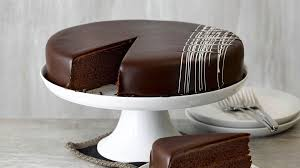

Bild
Zutaten (einfaches Schul-Rezept)
- 150 g Butter
- 120 g Zucker
- 4 Eier
- 150 g Schokolade (geschmolzen)
- 150 g Mehl
- 1 TL Backpulver
- Aprikosenmarmelade
- Schokoglasur
Zubereitung
- Ofen auf 170°C vorheizen.
- Butter + Zucker cremig rühren.
- Eier trennen, Eigelb dazugeben.
- Schokolade einrühren.
- Mehl + Backpulver dazu.
- Eiklar steif schlagen und vorsichtig unterheben.
- Ca. 35–40 Minuten backen.
- Mit Marmelade füllen und mit Glasur überziehen.
Tipp: Mit Schlagobers daneben = Deluxe 😄